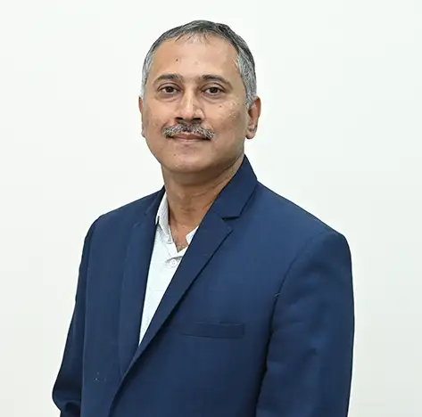
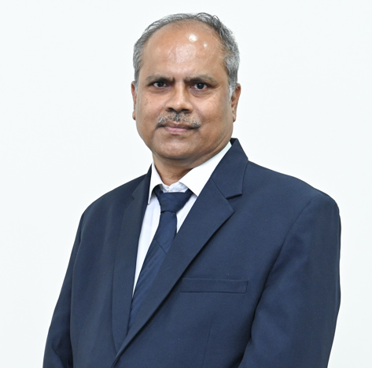

Dr. Sachin Arun Kulkarni
Associate Professor & Head of Department
Nanomaterials and nanocomposites: synthesis, characterisation, and applications.

Associate Professor & Head of Department
Nanomaterials and nanocomposites: synthesis, characterisation, and applications.

Professor of Practice
Radiation processing of polymers and composites; viscoelastic and acoustic properties of liquid mixtures.

Assistant Professor
Semiconductor nanostructures, two-dimensional materials, thin films, sensors, and optoelectronic devices.

Assistant Professor
Cosmic magnetic fields, nonlinear and galactic dynamos, the interstellar medium, and cosmic-ray dynamos.

Assistant Professor
Corrosion science, including anti-corrosive films on steel.

Assistant Professor
Organic and inorganic functional nanomaterials, organic field-effect transistors, hybrid materials, chemical sensors, and research instrumentation.
Assistant Professor
Metal-oxide and nanocomposite thick and thin films for gas sensing.

Assistant Professor
Metal–semiconductor quantum dots and nanomaterials for optoelectronic, energy-storage, and biological applications.

Assistant Professor
Soft matter physics, quantum chemistry, quantum computing, and computational physics.

Assistant Professor
Theoretical nonlinear optics, nonlinear dynamics, optical solitons, and photonic systems.

Assistant Professor
Dielectrics and spectroscopy; structural and physical properties of particulate-filled polymers.

Assistant Professor
Experimental nonlinear and quantum optics, structured light, and nanophotonics.

Assistant Professor
Semiconductor, ferroelectric, and dielectric thin films for solid-state devices, including photodetectors and thin-film transistors.

Assistant Professor
High-energy theory, gravitation, and fundamental interactions.